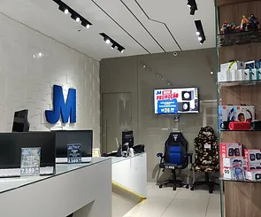

Sobre A Empresa
Quem Somos?
Somos a JM INFORMÁTICA E SEGURANÇA ELETRÔNICA.
Como surgiu a empresa? Quando? Por qual motivação?
Com sonho de ter seu próprio negócio, em 2017 Jhonatan saiu de seu
emprego, mudando sua vida de empregado à empreendedor. Com muita fé e
determinação, transformou o quarto de visita de sua casa, em um pequeno
escritório de manutenção de informática. No início, sua esposa ajudava
buscando computador na casa do cliente e fazendo a devolução, Jhonatan
realizava visitas técnicas em comércios e a noite realizava as
manutenções. Com nove meses de funcionamento do escritório, houve a
necessidade da primeira contratação. Já com um ano e dez meses, dois
técnicos compunham a equipe JM.


O atendimento em sua própria casa, já estava sendo insustentável, devido
o grande número de clientes e serviços, começa então, o desafio de abrir
uma loja física. Deus abençoou então, a inauguração da JM INFORMÁTICA,
em seu 1º endereço comercial, onde começou uma nova jornada, agregando
também, o serviço de segurança eletrônica. Sempre surpreendido pelo
bondoso Deus e de forma inacreditável o número de clientes e serviços
foram crescendo de tal forma que o tamanho da equipe já não era
suficiente, o espaço já não comportava seus colaboradores, clientes,
produtos e estoque. Em 4 de dezembro de 2021, reinaugou a nova JM
INFORMÁTICA E SEGURANÇA ELETRÔNICA em um novo endereço com espaço mais
amplo e estruturado, com uma equipe de 9 colaboradores.
O que fazemos?
Uma loja especializada em consertos e upgrade de equipamentos, vendas de
produtos de informática, especialistas na área gamer e segurança
eletrônica.
Onde estamos atualmente?
Estamos localizados na Rua Mickeil Chequer, Nº 15, Centro, Ibatiba-ES,